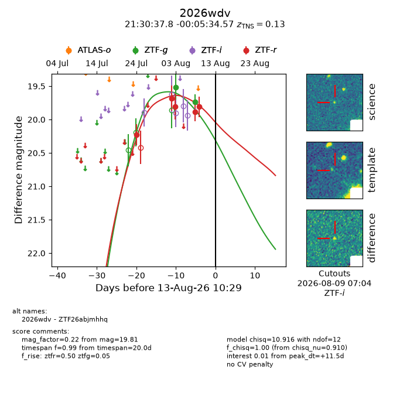
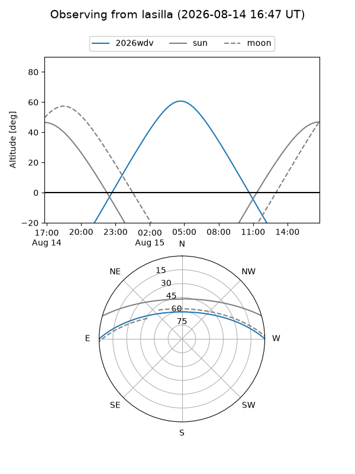
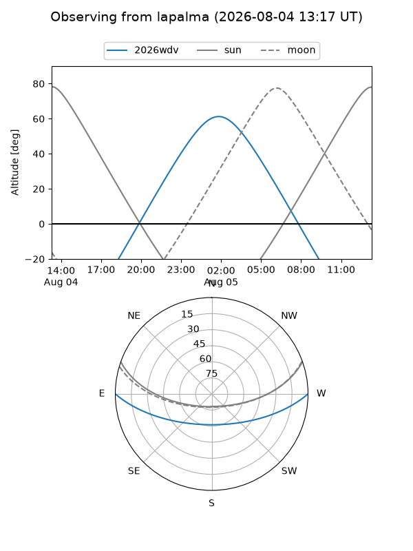
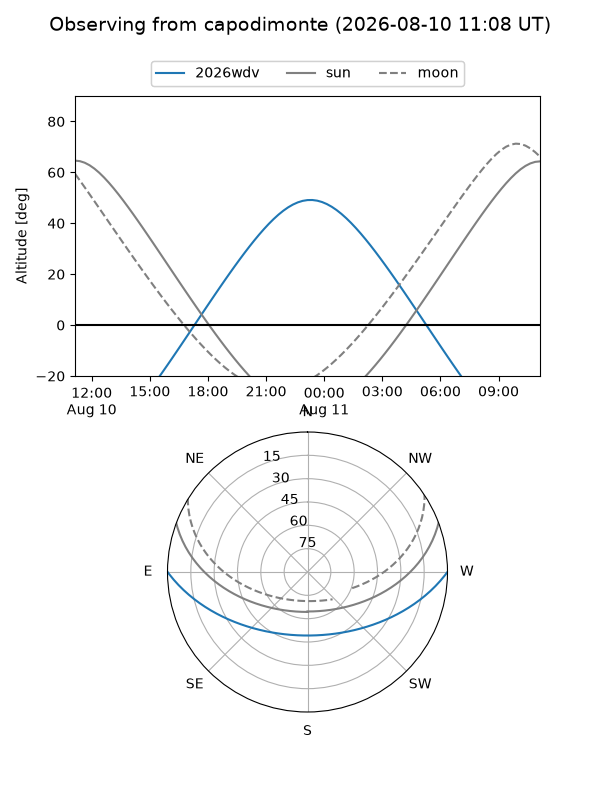
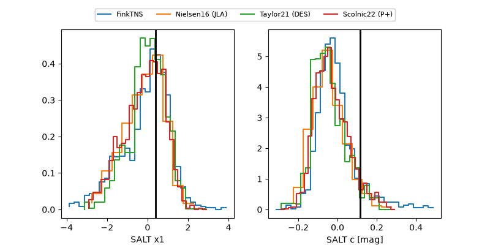

2026wdv
Target 2026wdv at 2026-08-13 10:32
Aliases and brokers:
FINK-ZTF: ztf.fink-portal.org/ZTF26abjmhhq
Lasair-ZTF: lasair-ztf.lsst.ac.uk/objects/ZTF26abjmhhq
ALeRCE-ZTF: alerce.online/object/ZTF26abjmhhq
YSE-PZ: ziggy.ucolick.org/yse/transient_detail/2026wdv
TNS name: wis-tns.org/object/2026wdv
Direct TNS query: direct search
alt names
ZTF26abjmhhq (ztf,fink_ztf)
2026wdv (tns,yse)
Coordinates:
equatorial (ra, dec) = 322.6574,-0.09294
equatorial (HMS+DMS) = 21:30:37.78,-00:05:34.57
galactic (l, b) = (53.6388,-34.77843)
Flags:
TNS type: SN Ia
TNS redshift: 0.1300
peak dt: +11.5
Photometry:
last ztfg=19.74, ztfr=19.81
2 ztfg, 5 ztfr detections
Lightcurve

Visibility



Additional plots
